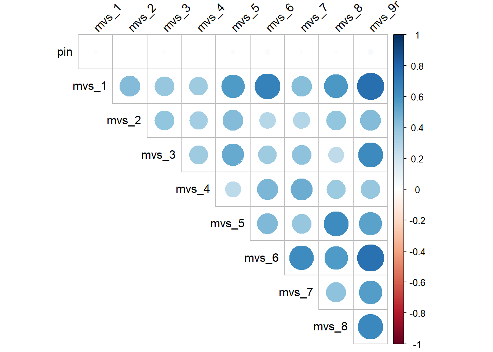

6 Multi-Item Measures
6.1 Overview
This section guides you through the steps to deal with multi-item measures.
Typically, for constructs that are measured (e.g., manipulation check items, dependent variables), we use several items to assess the construct. Because each item is supposed to measure the same construct, instead of looking at each item separately, it is more efficient to combine participants’ responses to these multiple items into a single score. This single score is then the variable that operationalises our construct. However, because participants do not always respond to items in the way that researchers intend, we should first check that the pattern of responses is consistent with our expectations (i.e., check which items are positively / negatively related to each other). We also need to check whether the items have adequate reliability. Then, we can create an average or a total score out of all the items of the scale.
6.2 Dataset
To illustrate how we deal with multi-item measures, I will use the hypothetical dataset SWB.csv, used in the tidyverse section earlier and also in Assignment 2. If you do not have a copy of the dataset, download it here: SWB.csv.
For this tutorial, we will only focus on the items measuring materialism. In this hypothetical study, materialism is measured with 9 items from the Materialism Values Survey (i.e., mvs_1 to mvs_9). mvs_1 to mvs_8 are positively keyed items, meaning that higher scores should indicate greater endorsement of materialistic values. mvs_9 is a reverse (or negatively) keyed item, meaning that higher scores on mvs_9 should indicate lesser endorsement of materialistic values.
The specific wording of each item in the MVS is listed below.
Legend
| Variable Name | Variable Label | Value Label |
|---|---|---|
| pin | participant identification number | |
| mvs_1 | My life would be better if I own certain things I don’t have. | 1 = strongly disagree, 2 = disagree, 3 = neither disagree nor agree, 4 = agree, 5 = strongly agree |
| mvs_2 | The things I own say a lot about how well I’m doing. | 1 = strongly disagree, 2 = disagree, 3 = neither disagree nor agree, 4 = agree, 5 = strongly agree |
| mvs_3 | I’d be happier if I could afford to buy more things. | 1 = strongly disagree, 2 = disagree, 3 = neither disagree nor agree, 4 = agree, 5 = strongly agree |
| mvs_4 | It bothers me that I can’t afford to buy things I’d like. | 1 = strongly disagree, 2 = disagree, 3 = neither disagree nor agree, 4 = agree, 5 = strongly agree |
| mvs_5 | Buying things gives me a lot of pleasure. | 1 = strongly disagree, 2 = disagree, 3 = neither disagree nor agree, 4 = agree, 5 = strongly agree |
| mvs_6 | I admire people who own expensive homes, cars, clothes. | 1 = strongly disagree, 2 = disagree, 3 = neither disagree nor agree, 4 = agree, 5 = strongly agree |
| mvs_7 | I like to own things that impress people. | 1 = strongly disagree, 2 = disagree, 3 = neither disagree nor agree, 4 = agree, 5 = strongly agree |
| mvs_8 | I like a lot of luxury in my life. | 1 = strongly disagree, 2 = disagree, 3 = neither disagree nor agree, 4 = agree, 5 = strongly agree |
| mvs_9 | I try to keep my life simple, as far as possessions are concerned. (R) | 1 = strongly disagree, 2 = disagree, 3 = neither disagree nor agree, 4 = agree, 5 = strongly agree |
Let’s start by reading in the dataset, then creating a subset of the dataset. We will keep mvs_1 - mvs_9 and also the participant identification number (pin) so that if there are any issues with the responses (e.g., if there is missing data), we know which participant that issue came from.
# Load package
library(tidyverse)
# Read in the data
dataset <- read_csv("SWB.csv")
# Create subset with the required variables and call it MVS
MVS <- dataset %>%
select(pin, mvs_1:mvs_9)
# Check that the subset gives you what you want
glimpse(MVS)## Rows: 343
## Columns: 10
## $ pin <dbl> 1, 2, 3, 4, 5, 6, 7, 8, 9, 10, 11, 12, 13, 14, 15, 16, 17, 18, 1…
## $ mvs_1 <dbl> 4, 4, 5, 2, 2, 3, 2, 2, 3, 2, 2, 3, 2, 2, 3, 3, 3, 4, 3, 3, 4, 4…
## $ mvs_2 <dbl> 3, 3, 4, 3, 2, 4, 3, 3, 4, 3, 2, 4, 1, 3, 2, 3, 2, 4, 3, 2, 4, 3…
## $ mvs_3 <dbl> 3, 3, 4, 3, 3, 4, 3, 3, 4, 3, 3, 4, 2, 2, 3, 4, 4, 5, 3, 3, 4, 4…
## $ mvs_4 <dbl> 3, 3, 3, 2, 2, 5, 4, 4, 3, 4, 4, 4, 2, 2, 4, 3, 3, 4, 4, 4, 5, 4…
## $ mvs_5 <dbl> 3, 3, 4, 3, 3, 4, 3, 3, 4, 2, 2, 3, 3, 3, 4, 4, 4, 5, 3, 3, 4, 4…
## $ mvs_6 <dbl> 4, 4, 5, 2, 2, 3, 4, 4, 5, 2, 2, 3, 3, 3, 4, 2, 2, 3, 4, 4, 5, 4…
## $ mvs_7 <dbl> 3, 2, 4, 2, 3, 3, 3, 3, 4, 3, 1, 4, 4, 1, 5, 1, 3, 2, 3, 3, 4, 3…
## $ mvs_8 <dbl> 4, 4, 5, 4, 4, 5, 3, 3, 4, 3, 3, 4, 2, 2, 3, 3, 3, 4, 4, 4, 5, 3…
## $ mvs_9 <dbl> 2, 2, 1, 3, 3, 2, 3, 3, 2, 4, 4, 3, 4, 4, 3, 3, 3, 2, 3, 3, 2, 3…Before we combine the 9 items into one overall measure of materialism, though, we need to check a number of things.
6.3 Check the Pattern of Responses: Correlation Coefficient
First, we need to check the pattern of responses for our 9 items. We do this using the correlation coefficient.
The correlation coefficient, r, tells us if two variables are linearly related. In general, there are two directions, positive and negative. When two variables increase or decrease in the same direction (e.g., when one increases, the other also increases; when one decreases, the other also decreases), we call this a positive linear relationship. The correlation coefficient will be a positive number. When the two variables move in opposite directions (e.g., when one increases, the other decreases and vice versa), we call this a negative linear relationship. The correlation coefficient will be a negative number. The correlation coefficient always has a minimum value of -1 (i.e., variables are perfectly negatively correlated) and a maximum value of 1 (i.e., variables are perfectly positively correlated). Values beyond this range are impossible (because of the way r is calculated).
Because all the items of the Materialism Values Survey are supposed to measure the same construct, i.e., materialism, we expect positive-keyed items to correlate positively with each other and reverse-keyed items to correlate negatively with positive-keyed items. So, we should expect all items to be positively related to each other except for mvs_9.
To confirm our expectations, we need the correlations between each pair of items in the Materialism Values Survey.
# cor() tells R to calculate the correlations for each pair of items/variables in the dataframe
cor(MVS) ## pin mvs_1 mvs_2 mvs_3 mvs_4 mvs_5
## pin 1.000000000 0.01820791 0.00261561 0.0190207 -0.004592464 0.02088333
## mvs_1 0.018207909 1.00000000 0.43763755 0.3899635 0.350306014 0.56608026
## mvs_2 0.002615610 0.43763755 1.00000000 0.3956159 0.342974781 0.43869719
## mvs_3 0.019020703 0.38996352 0.39561590 1.0000000 0.358897021 0.50948105
## mvs_4 -0.004592464 0.35030601 0.34297478 0.3588970 1.000000000 0.26055546
## mvs_5 0.020883333 0.56608026 0.43869719 0.5094811 0.260555462 1.00000000
## mvs_6 0.029931812 0.67775570 0.28114358 0.3502713 0.455624190 0.44042258
## mvs_7 0.014597497 0.42771247 0.29644060 0.4019504 0.494644383 0.38935168
## mvs_8 0.012333886 0.57560443 0.39774601 0.2562786 0.361006990 0.62365310
## mvs_9 -0.031136263 -0.75002163 -0.43323415 -0.6384993 -0.384562433 -0.53922937
## mvs_6 mvs_7 mvs_8 mvs_9
## pin 0.02993181 0.0145975 0.01233389 -0.03113626
## mvs_1 0.67775570 0.4277125 0.57560443 -0.75002163
## mvs_2 0.28114358 0.2964406 0.39774601 -0.43323415
## mvs_3 0.35027129 0.4019504 0.25627862 -0.63849929
## mvs_4 0.45562419 0.4946444 0.36100699 -0.38456243
## mvs_5 0.44042258 0.3893517 0.62365310 -0.53922937
## mvs_6 1.00000000 0.6200303 0.56460779 -0.74614447
## mvs_7 0.62003030 1.0000000 0.40459133 -0.55145900
## mvs_8 0.56460779 0.4045913 1.00000000 -0.64079832
## mvs_9 -0.74614447 -0.5514590 -0.64079832 1.00000000Personally, I think the output is much easier to read if you coerce (force) it into a data frame with this code:
You will find cor.output in the Environment tab (top right hand pane of RStudio). Click on it and you can read it like a normal data frame. Alternatively, you can use the View() function. Either way, you’ll see a data frame, where each row by column cell shows the correlation between the row item and the column item (e.g., item mvs_1 and item mvs_2 have a correlation of .4525015).
Of course, this alternative method only serves to make the output more readable. There is no difference in the actual result. Still, I think readability is important, especially when the original output is broken up into two rows, which can make it more difficult to understand.
Regardless which method you use, the output shows you that positive-keyed items correlate positively with each other (i.e., the correlations are positive for all pairs of positive-keyed items). Also, positive-keyed items correlate negatively with the reverse-keyed item. The correlations between mvs_9 (in the rightmost column) and each of the other items are negative. These results indicate that participants are responding to the items as we expect.
I find that when there are too many variables, the correlation matrix might be a bit overwhelming. So, it might help to create a correlation plot using the corrplot() function from the corrplot package.
# Load package
library(corrplot)
# Produce the correlation plot
corrplot(cor(MVS),
type = "upper", # we only want the correlations reflected in the upper triangle (because the lower triangle and upper triangle will give us the same result, choosing one or the other helps reduce clutter)
tl.col="black", # text label colour = black
tl.srt = 45, # rotate the text label by 45 degrees for readability
diag = FALSE) # do not show the diagonal, which is essentially the correlations of the variables with themselves. Removing this will help reduce clutter in the outputBlue represents positive correlation, red represents negative correlation, and the size of the circles represent the strength of the correlation. Notice that the column for mvs_9 are all red circles, which is indeed what we would expect, since mvs_9 is the only reverse keyed item.
To be honest, I much prefer to first reverse code all the reverse keyed items before getting the correlation coefficients. That way, it’s much easier to spot a problem–the moment I see a negative sign, it’s a problem. So, let’s do that reverse coding now.
The simple formula to use to reverse code data is this: (max possible value on likert scale + min possible value on likert scale) - observation. If you refer to the legend, you’ll see that the maximum possible value is 5 and the minimum possible value is 1 for the 9 items.
# Recode mvs_9 by creating a new variable called mvs_9r
MVS <- MVS %>%
mutate(mvs_9r = 5 + 1 - mvs_9)
# Check mvs_9 is correctly recoded for the first 6 rows
# A 1 on mvs_9 should be a 5 on mvs_9r, 2 should be a 4, and so on
MVS %>%
select(mvs_9, mvs_9r) %>%
head(6)## # A tibble: 6 × 2
## mvs_9 mvs_9r
## <dbl> <dbl>
## 1 2 4
## 2 2 4
## 3 1 5
## 4 3 3
## 5 3 3
## 6 2 4Note. Notice that I labelled my recoded variable as mvs_9r (where r stands for recoded). Some people might choose to replace (overwrite) the variable instead of giving the recoded variable a new name. So they might do the following: mutate(mvs_9 = 5 + 1 - mvs_9). I strongly recommend against this as it might confuse you later on–you cannot tell at a glance whether you have recoded the variable. You’ll have to keep checking your code to confirm this, which would increase the probability of making errors. (Sadly, I know this from experience…)
Once you have confirmed that you correctly recoded the variable, you can drop mvs_9 by using select(). Then conduct the correlation analysis to look at the correlation matrix.
# Drop mvs_9
MVS <- MVS %>%
select(pin, mvs_1:mvs_8, mvs_9r)
# Examine the correlation matrix
cor(MVS)## pin mvs_1 mvs_2 mvs_3 mvs_4 mvs_5
## pin 1.000000000 0.01820791 0.00261561 0.0190207 -0.004592464 0.02088333
## mvs_1 0.018207909 1.00000000 0.43763755 0.3899635 0.350306014 0.56608026
## mvs_2 0.002615610 0.43763755 1.00000000 0.3956159 0.342974781 0.43869719
## mvs_3 0.019020703 0.38996352 0.39561590 1.0000000 0.358897021 0.50948105
## mvs_4 -0.004592464 0.35030601 0.34297478 0.3588970 1.000000000 0.26055546
## mvs_5 0.020883333 0.56608026 0.43869719 0.5094811 0.260555462 1.00000000
## mvs_6 0.029931812 0.67775570 0.28114358 0.3502713 0.455624190 0.44042258
## mvs_7 0.014597497 0.42771247 0.29644060 0.4019504 0.494644383 0.38935168
## mvs_8 0.012333886 0.57560443 0.39774601 0.2562786 0.361006990 0.62365310
## mvs_9r 0.031136263 0.75002163 0.43323415 0.6384993 0.384562433 0.53922937
## mvs_6 mvs_7 mvs_8 mvs_9r
## pin 0.02993181 0.0145975 0.01233389 0.03113626
## mvs_1 0.67775570 0.4277125 0.57560443 0.75002163
## mvs_2 0.28114358 0.2964406 0.39774601 0.43323415
## mvs_3 0.35027129 0.4019504 0.25627862 0.63849929
## mvs_4 0.45562419 0.4946444 0.36100699 0.38456243
## mvs_5 0.44042258 0.3893517 0.62365310 0.53922937
## mvs_6 1.00000000 0.6200303 0.56460779 0.74614447
## mvs_7 0.62003030 1.0000000 0.40459133 0.55145900
## mvs_8 0.56460779 0.4045913 1.00000000 0.64079832
## mvs_9r 0.74614447 0.5514590 0.64079832 1.00000000# Produce the correlation plot
corrplot(cor(MVS), type = "upper", tl.col="black", tl.srt = 45, diag = FALSE)
Now that we recoded mvs_9 into mvs_9r, you can see, all correlation coefficients here are positive and the correlation plot shows all blue circles. So, all is good!
Before we move on to the next bit, I should mention that cor() doesn’t provide the p values for the correlations. If you would like the p values, then you should consider using corr.test() from the psych package instead.
6.4 Reliability Analysis: Cronbach’s Alpha
Before averaging (or summing) the items to get an overall MVS score, we must demonstrate that the items have adequate reliability. Cronbach’s alpha is one of the most common measure of internal consistency reliability. It’s a number that ranges from 0 to 1 and indicates how well the items on the scale measure the same construct (in this case, materialism). An alpha of .70 is accepted by many researchers as adequate reliability. However, for certain purposes, an alpha of .60 to .70 can be accepted if justified (e.g., research is new and exploratory or focused on theory or items measure different facets of the construct). If reliability is too low, however, this might mean the responses were too inconsistent across items. Then it might not make sense to average them together. If this happens in your project, it would be an important limitation to discuss in the report.
We will use the alpha() function in the psych package to conduct the reliability analysis. Note that this function is used on the data frame with the reverse-keyed items all reverse coded already. So, if you haven’t reverse-coded mvs_9 yet (see above for instructions), do so before continuing.
At this point, it should also be noted that ggplot2 also has an alpha() function. If you have both tidyverse and psych loaded, R might be confused as to which package to use and throw up an error. You can specify the package like this: package::function().
# First, ensure the dataset only has the items from the scale (meaning, remove pin and keep only the 9 items)
MVS <- MVS %>%
select(mvs_1:mvs_8, mvs_9r)
# tell R we want to use the alpha() function from the psych package
# the alpha function will give us the Cronbach’s alpha for all the items in MVS.
psych::alpha(MVS)Notice that we do not need to load the package using library(psych). psych::alpha() temporarily loads the package (just for that chunk of code). If you want to use other functions in the psych package, then you’ll probably want to load the package.
##
## Reliability analysis
## Call: psych::alpha(x = MVS)
##
## raw_alpha std.alpha G6(smc) average_r S/N ase mean sd median_r
## 0.88 0.89 0.91 0.47 7.8 0.0098 3.4 0.68 0.44
##
## 95% confidence boundaries
## lower alpha upper
## Feldt 0.86 0.88 0.9
## Duhachek 0.86 0.88 0.9
##
## Reliability if an item is dropped:
## raw_alpha std.alpha G6(smc) average_r S/N alpha se var.r med.r
## mvs_1 0.86 0.87 0.89 0.45 6.5 0.012 0.016 0.42
## mvs_2 0.88 0.89 0.91 0.49 7.7 0.010 0.019 0.48
## mvs_3 0.87 0.88 0.89 0.48 7.4 0.011 0.018 0.44
## mvs_4 0.88 0.89 0.91 0.49 7.7 0.010 0.018 0.44
## mvs_5 0.87 0.87 0.89 0.46 6.9 0.011 0.019 0.42
## mvs_6 0.86 0.87 0.89 0.45 6.6 0.012 0.015 0.42
## mvs_7 0.87 0.88 0.90 0.47 7.1 0.011 0.020 0.44
## mvs_8 0.87 0.87 0.89 0.46 6.9 0.011 0.018 0.44
## mvs_9r 0.85 0.86 0.87 0.43 6.1 0.012 0.013 0.40
##
## Item statistics
## n raw.r std.r r.cor r.drop mean sd
## mvs_1 343 0.78 0.79 0.78 0.71 3.4 0.92
## mvs_2 343 0.63 0.62 0.54 0.51 2.9 1.08
## mvs_3 343 0.66 0.66 0.63 0.56 3.5 0.91
## mvs_4 343 0.63 0.61 0.54 0.51 3.3 1.00
## mvs_5 343 0.72 0.73 0.70 0.64 3.5 0.89
## mvs_6 343 0.78 0.79 0.78 0.71 3.7 0.89
## mvs_7 343 0.72 0.70 0.65 0.61 3.1 1.15
## mvs_8 343 0.73 0.74 0.72 0.65 3.6 0.85
## mvs_9r 343 0.86 0.87 0.89 0.82 3.6 0.79
##
## Non missing response frequency for each item
## 1 2 3 4 5 miss
## mvs_1 0.00 0.19 0.34 0.35 0.11 0
## mvs_2 0.10 0.25 0.34 0.24 0.07 0
## mvs_3 0.00 0.15 0.31 0.40 0.14 0
## mvs_4 0.00 0.28 0.28 0.32 0.12 0
## mvs_5 0.00 0.15 0.35 0.38 0.12 0
## mvs_6 0.00 0.11 0.26 0.45 0.17 0
## mvs_7 0.11 0.17 0.35 0.25 0.12 0
## mvs_8 0.00 0.10 0.33 0.43 0.14 0
## mvs_9r 0.00 0.06 0.36 0.44 0.13 0The Reliability analysis section of the output tells us that the Cronbach’s alpha is .88 (raw_alpha). The last two lines tell us that the 95% confidence interval surrounding the Cronbach’s alpha is 95% CI [.86, .90]. That is, we can be 95% confident that this interval contains the population Cronbach’s alpha. We can ignore the other parts in this section as they are not relevant and look at the next section.
As a separate note, Feldt and Duhachek are different ways of calculating the 95% confidence interval. (Feldt only considers mean covariances whereas Duhachek considers variance of the covariances.) The numbers for both methods should match for larger sample sizes. For smaller sample sizes, the numbers might differ. If they do, there is currently no fixed rule of thumb. So, for this class, if the numbers differ, report the one for Duhachek. It is likely to give you more accurate confidence intervals given that it also considers variance of the covariances. (If you are very concerned about confidence intervals, you might instead do bootstrapping, which is also available in the psych package under n.iter.)
The Reliability if an item is dropped section is especially helpful if we are looking at a scale that we have developed (i.e., NOT an established, well-validated scale that has been published), and are considering which items to exclude from our final scale.
The table’s second column, raw_alpha, tells you what the Cronbach’s alpha would be if we re-ran the Reliability Analysis excluding that item. For example, if we computed the reliability without mvs_1 (first row), the Cronbach’s alpha would drop from .88 (from the Reliability analysis section) to .86. This means that the scale becomes less reliable when we remove mvs_1. So, we want to keep this item in our final scale. If deleting an item increases the overall Cronbach’s alpha (in this case, if the raw_alpha is larger than .88), then it means that the scale becomes more reliable when we remove the item. So, we would probably exclude the item from our final scale. In that case, re-analyse the data excluding that item. Repeat this process until there are no more items with a raw_alpha value greater than the Cronbach’s alpha for the overall scale. Take note of which items you excluded because you will need to exclude them when calculating the average or the total score.
If the scale is obtained from a published source (as the MVS is), we do NOT exclude items. This is because we want to be able to compare our results with previous research that has used the same scale (i.e., with all the items). Excluding items means our results will not be directly comparable anymore. However, the Reliability if an item is dropped table is still helpful because it tells us if each item is contributing to the overall scale in the way we expect. If the items are not working in the way we expect, this would be an important limitation to discuss in the paper.
We will ignore the Item statistics section and go straight to the section on Non missing response frequency for each item.
This is a relative frequency table for all the items in the scale. The most important thing to note is whether there are any missing data for the items (see the column miss). In this case, there were no missing data. So hooray!
6.5 Compute the average score for the scale
Now that we’re sufficiently satisfied with the reliability of the scale, let’s compute the average score.
MVS <- MVS %>%
mutate(MVS_avg = rowMeans(across(c(mvs_1:mvs_8, mvs_9r)))) # calculate the average MVS score across the set of 9 items and call the average MVS_avgYou might want to check if MVS_avg is correctly calculated. Go to View(MVS) and manually calculate the average of mvs_1 to mvs_9r for the first row. You should get 3.44 (to 2 d.p.) which should match the value in the MVS_avg column.
Of course, you could create MVS_avg by adding all the items together (mvs_1 + mvs_2 + ... + mvs_9r) and dividing that total by 9. I think that’s a bit tedious, but some people are intimidated by rowMeans(). So, do what makes more sense for you!
Congratulations on completing this section! You’re now ready to try the next exercise! Proceed to the next section!